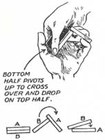
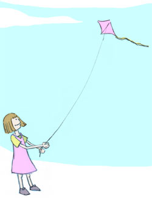
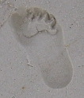

I saw three people I haven’t seen in over a decade last week. The first two from high school — Heather, at Magnolia Cafe in Austin before leaving, then Joel randomly on Market Street in San Francisco. I wondered who I’d run into next, and the answer came a few days into WWDC when I spotted Bob Pudell, who hired me for an internship at Apple my second semester at UT, and from which I can trace just about every job I’ve landed since.
Category Archives: Personal
The Great Scott
 I’m not sure I ever wanted to “grow up” to be a magician, but I was pretty fascinated with it as a kid, and more serious about it than most. I knew the disappearing quarter tricks, had the special card decks, the fancy scarfs and foam balls. Once I went to a magic auction and won a box that could make anything the size of a baby rabbit appear or disappear. And, always, there were the trips to North Austin to a small converted shed in the backyard of a house where The Great Scott sold his magic books and items for eager kids and professional magicians alike.
He visited my elementary school once. My mom still has the photo of him pouring milk in my ear and pumping it out of the other. Among the right circles, I’d say he was pretty well known. It doesn’t surprise me that he and his wife have a web site.
Fred Donaldson (aka The Great Scott) passed away last week, age 79. That same week, I attended a course by Edward Tufte, who dedicates a chapter of the cloud book to magic (the included image is from it). A day after that, my kids saw another magician perform at the library, and a new generation of magicians was born.
High School Reunion
Saturday night was my 10-year high school reunion (more specifically the Anderson High School reunion class of 1994 from Austin, which I say only for Google’s reference, even if it dates me). As recent as two months ago I had considered not attending, but I ended up having a really good time, more than I ever thought I would. It was great to see everyone.
I took some pictures. Only a handful came out, so my apologies to everyone who will only remain a blurry image in my copy of iPhoto. Perhaps that’s for the best. But I’ve posted the better ones here with brief annotations for anyone who was at the event. Most of the time I forgot I had the camera with me. (Whoops.)
Luckily I didn’t show up alone, so the nervousness and “I don’t belong here” feeling that I was bracing for was diminished. Afterwards, though, came a sort of melancholy that I did not expect, a vague emotional conflict between the few folks I’ll see again and the larger number that I probably won’t. Five minutes of conversation over drinks is not an adequate way to catch up on 10 years. Truthfully, I share more in common with some of them now than I do the people I see on a more regular basis. All Sunday I found myself thinking about it, and just sort of marveling at how our lives diverge and then criss-cross again, and how that same web is played out on a larger scale for everyone we meet.
Backyard Fireworks
The private park behind our house is owned by a local church, and they aren’t afraid to spend money on fireworks every year. Last week was probably the best show yet. We brought some chairs out to the sidewalk to get a good view over our trees. Our neighbors were doing hotdogs and marshmallows in their front yard and also provided sparklers. Fun times.
I took some cheap video with my digital camera. Some frames from it are below. It was so close overhead that the paper remnants from the fireworks were falling in the street and in the yard.
Kite Festival
 The weather was perfect today for the Zilker Kite Festival. It’s really incredible to see hundreds of kites flying overhead as you walk around. Homemade kites, children’s kites, giant kites, colorful kites. Kites shaped like cats, boats, dragons, snakes.
We arrived late in the afternoon, so we missed most of the contest portion of the event except for the “largest kite” category. If you ever thought flying a kite was easy, try one which requires more than one people holding the rope, with their heels dug into the ground just to keep from being lifted into the air.
Happy flying!
Snow
It snowed a week ago, and I’m just now getting the pictures off my camera. Real snow, the first I can remember here in at least 15 years. I was up Friday until 2am as the snow began to fall, so beautiful in the night. By the next afternoon most had already melted, but here’s a picture out our back yard that morning.
Christmas lights
I’ve come to enjoy the yearly tradition of putting up Christmas lights: balancing on a wobbly ladder, hanging over the side of the roof, and searching for that elusive burned-out mini-bulb. This year we put our lights up in record time, before the sun set on the eve of December 1st. Ah, the holidays.
(Not a great photo above. I was trying to capture the lights on the bird feeder.)
Kali
You always think that these are the kind of things that happen to other people, until it happens close to you. I went to the funeral service for Kali Sansone today, someone I saw practically everyday from kindergarten to 8th grade, but had not seen at all since.
Some people are lucky to live to an old age and have their accomplishments written about in history books, but for the rest of us, it’s about what we leave to the world through our children, and in those who remember us. Many people will remember and be inspired by Kali.
I don’t usually post this kind of personal stuff here, but I met up with some old friends and wanted to note that. If you’re Googling and find this site, send me an email. I’d be interesting in hearing about what you’ve been up to these last 12 years. :-)
Fireworks
I meant to blog every day from WWDC, but the network was just too flaky, and all my free time was spent coding. I wrote up a few things and will post them over the next week.
I hoped to feel rested, but I was drained after the conference was over. Slept on the plane back, and a big nap the next day trying to adjust. The church that owns the land behind our house put on an incredible fireworks show Sunday night. It lasted a good 30 minutes, and rivaled any city-sponsored fireworks I’ve seen. It was even bigger than the same event two years ago. We had just moved into our new house the previous day, and we sat on the back deck with a drink, staring at the sky above our house. It was a great welcome to the neighborhood.
Snow in Austin
It snowed when I was about 5 years old and when I was maybe 10, so I assumed it would snow every 5 years. When you’re young, it’s easy to jump to conclusions and see patterns that don’t exist. Of course it hasn’t snowed since then.
But after a few days of teasing weather reports forecasting snow and ice, I woke up at 4am and stepped out on the back deck to see snow covering the ground. I raised my hands and could feel it falling, lightly. For someone who has lived in central Texas their whole life, this is a big deal.
It all melted within a few hours, but not before I made a miniature snowman with my kids.
NASA loses shuttle
Oh no.
AP: NASA Loses Touch with Shuttle Columbia:
“NASA declared an emergency after losing communication with space shuttle Columbia as the ship soared over Texas several minutes before its expected landing time Saturday morning.”
CNN: Columbia shuttle breaks up over Texas:
“Police in Nacogdoches, Texas, reported ‘numerous pieces of debris’ both inside the city limits and in Nacogdoches County.”
Listening to NPR this morning: “Eerie quiet at Kennedy Space Center.”
I remember a few years ago, seeing the shuttle pass over Austin. We went outside, and it seemed half the neighborhood was also out in the streets, looking up. I wondered aloud if we’d be able to see anything. We squinted at the clouds, and other imagined dots in the sky. And then, the sky lit up — a huge streak across the sky as the shuttle passed. An amazing sight.
Morality for and against war
From the BBC: “The international community has a ‘moral responsibility’ to avoid war with Iraq, the Catholic Church has warned.”
Meanwhile, Bob Kerrey (former Democratic senator) makes the moral case for war in Iraq:
“We know what a terrible thing we did after the Gulf War to encourage Iraqis to rise up and then not follow through in helping them. But you can’t take the worst America has done and then cite it as reason not to try and do anything good.”
There and back again

Out all last week, vacationing around the Gulf coast. It was good to unplug for a week and forget about the email, the blogs, and the constant hum of a noisy FireWire drive. I think we went three whole days without hearing the word “sniper”.
While skipping around through my
While skipping around through my MP3 collection, it’s easy to forget why I don’t run out and buy CDs frequently. But I bought one a few days ago, which brought back the memory. It’s not that they are too expensive (which they are), it’s that those stupid plastic wraps are impossible to open!
As most bloggers on the
As most bloggers on the planet know by now, Dave Winer has been in the hospital this week. Rogers Cadenhead organized a quick passing of the PayPal hat to buy Dave an engraved iPod. I have to admit I got a chill when I read the quote. The ability for online communities to hook up like this and make a big difference is very powerful. Also today, the K5 fundraising drive has almost reached $35,000.
Went out to Home Depot
Went out to Home Depot this evening to get paint supplies. On the counter was a hand-written sign that read: “Can’t do paint color matching because of computer death.”
It turned into a really
It turned into a really beautiful day in Austin. I’m sitting outside on the deck with my TiBook. No cars, no phone — just the wind chimes and a few birds. To everyone who was in town for SXSW: You should have stayed through the weekend. :)